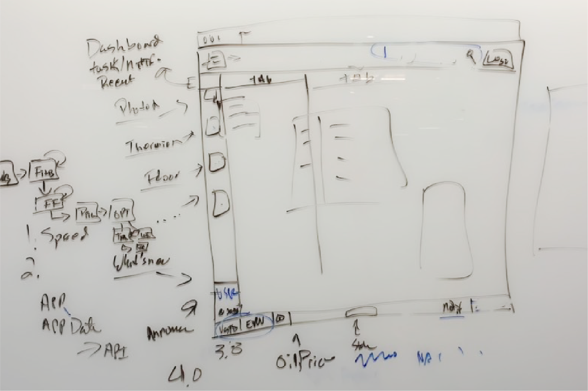
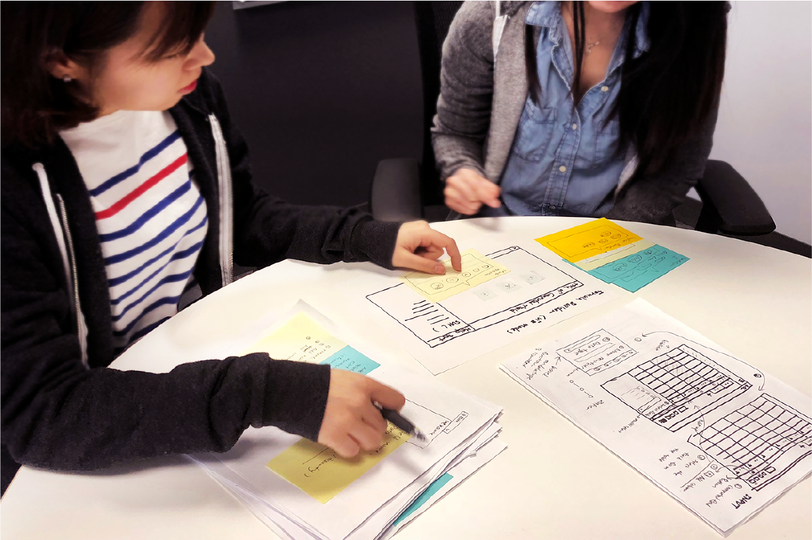
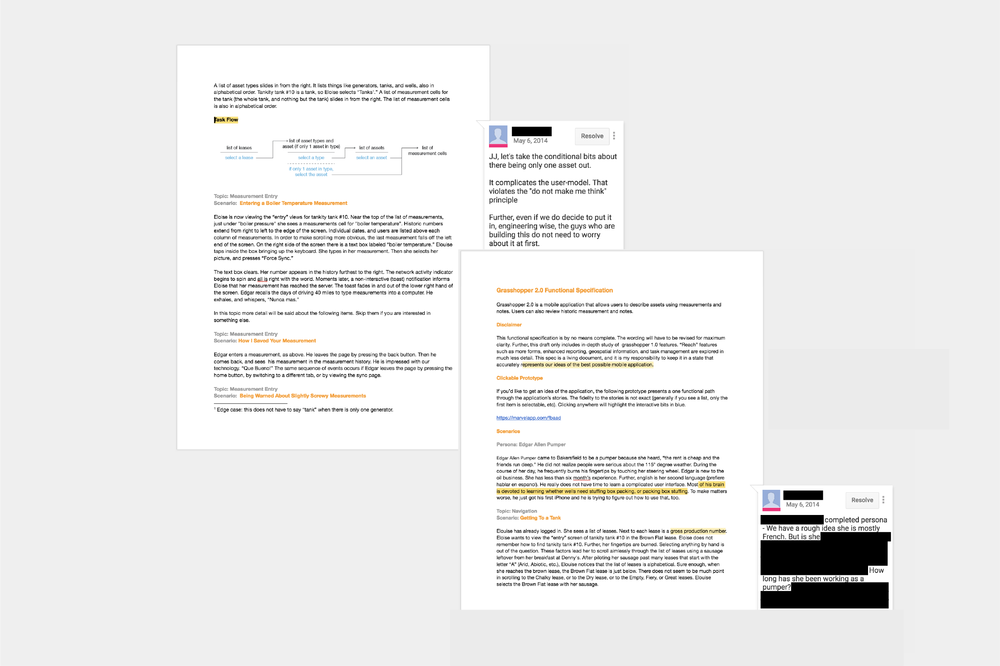

Tachyus
Optimizing oil & gas production
Brand Identity
Art Direction
User Experience
User Research
Data Visualization
Cartography & GIS
Accessibility
Localization
Brand Identity
Art Direction
User Experience
User Research
Data Visualization
Cartography & GIS
Accessibility
Localization
The oil and gas industry is one of the most critical industries on the planet. It’s the reason most of us can go places, it’s the reason most of us can get our food. Tachyus creates technology to optimize oil and gas production with machine learning and physics.
The plot of Back to the Future Part II is helpful as an analogy to understand how Tachyus' products work. The movie was about this high school kid and his friend, who's a disgraced nuclear physicist who built a time machine, flew to the (to be) future 2015, messed things up, and tried to correct their mistakes.
Minor spoiler alert in case you haven't watched this 30-year-old film: their nemesis from present-day was also there in the future and stole the time machine and took a sports almanac back to his former self back in 1955. With the sports almanac, the nemesis was able to bet profitably for the next 50 years and became a gambling tycoon.
The common thesis of the movie and Tachyus is that if we can predict the future, we can make profitable decisions today. We might not have the sports almanac, but there are plenty other ways to predict the future using data. As the first and only designer for 6 years, I've designed processes and executed end-to-end projects too many times to count, working alongside a small but nimble team of brilliant software engineers and product managers to connect the centuries-old industry with future technology to empower oil & gas producers to make data-driven decisions.
The predictive engine has two big components. One is a model to understand what’s going on underground. Some people picture an oil reservoir as a sea of oil, but it’s more like a sponge. So we built a model for that physical system that’s part machine learning and part physics, and that’s our secret sauce to help us predict the future of an oil reservoir. The second piece is an optimization engine that measures long-term value vs short-term production. By combining these two paradigms, our predictive engine ran the data model millions of times in parallel in just hours to help clients take the most optimal path for decades out.
The prediction model was given the moniker of Hypercube, named for its four data dimensions: time, schema, version, and geolocation. At each single point in time in the history of an oil reservoir, there are thousands of data versions, and all of these outcomes stack up to one metric of risk/reward and cost. Multiplying that by the well’s decades of life span and you get a colossal amount of data to analyze.
It not only suggested just one best future but multiple best possible futures, because a stakeholder might define what’s best for them differently. Think Doctor Strange, who saw all 14 million scenarios, but there were the best picks for every single universe in the multiverse. With the most optimal plans in hand, you'd be more confident knowing the best scenario to implement now and over the next 50 years.
User research in enterprises has always been limited, especially in the oil & gas industry, where there are only a handful of major companies globally. For users to be able to easily make sense of the massive data, we decided to make our product flow in a similar fashion as the existing tools they normally use to cut down on learning curve, so they get a good head start at navigating the product and can focus more on the actual analysis work, and we would progressively improve the user experience to be consumer-grade down the road.
To empathize with users when we couldn’t be immersed in their life and work context, I initiated several programs of UX training and workshop to equip our local sales engineers with the ability to conduct user research when they meet with prospective customers.
We also looked into secondary sources to run research with and got connected with the petroleum engineering program at Stanford. We conducted empathy workshops using role-playing to allow us in the challenges faced by petroleum engineers. Students were provided a set of personas to get into character to embody the professional’s experiences. Based on the scenario, the students would re-enact the scene where the essence of the structural problems was manifested. Through the workshops, we gained a close to first hand immersive learning of the various types of users, including field operators, drilling engineers, data scientists, reservoir engineers, and project managers.
Since we worked with all of the supermajors who fill up your tanks from day one, localization for people in non-English speaking countries was essential. We’ve more recently worked with NOCs (national oil companies) outside of North America. Most of the world’s production is nationalized, so we’ve worked with companies in Latin America, Asia, and Europe. It was challenging to say the least, to design the user interface to provide bidirectional text support (BiDi) so that the software can combine script from right to left (RTL) and left to right (LTR) writing systems on top of supporting multiple languages.
For the following iterations, I created a design system with North Star design principles and UI components to speed up the development. Based on Atomic Design, I named it Standard Model, borrowed from the particle physics theory, and subsequently renamed the system stages to Atoms, Molecules, Compounds, Substances, and Matters to make the convention easier to grasp.
I also created a system to automate different shades and tints that can expand a given color to be a set of 10 colors total for data visualizations. I probably had too much fun naming the colors inspired by fictional elements such as Mithril Gray, Rearden Blue, Adamantium Lime, Element-99 orange, Orichalcum Salmon, and Kryptonite Green. This helped developers make informed design decisions and freed me to further polish the visual design and jump in to help with frontend code where needed.
One of the most memorable quotes from Back To The Future II is that the future is whatever you make, so you should make it a good one. I had the opportunity to use digital and technology to transform one of the most traditional industries for the better, and I was glad to see we really have never lived in a time like now where we can embrace technology, embrace the changes, and use it for good. The future is today, and I'm making it a good one.
Development
Paul Orland
Dmitry Morozov
Ryan Riley
Jack Fox
Adam Jensen
Karlkim Suwanmongkol
Cameron Taggart
Will Smith
Chris Gervang
John Orland
Sumit Mitra
Ryan Hilliard
Lanny Wang
Kim Reardon
Design
JJ Moi